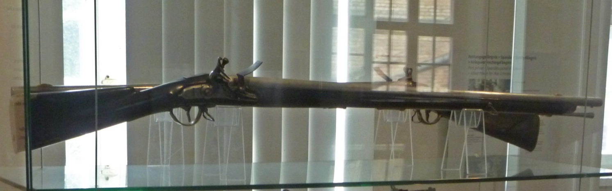
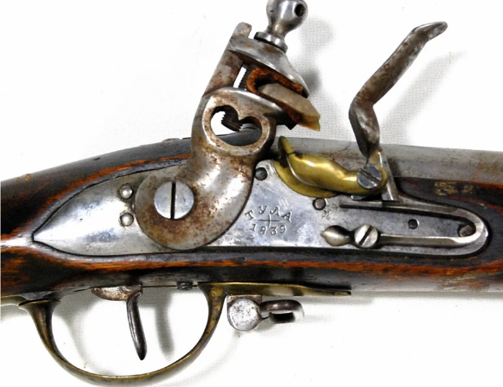
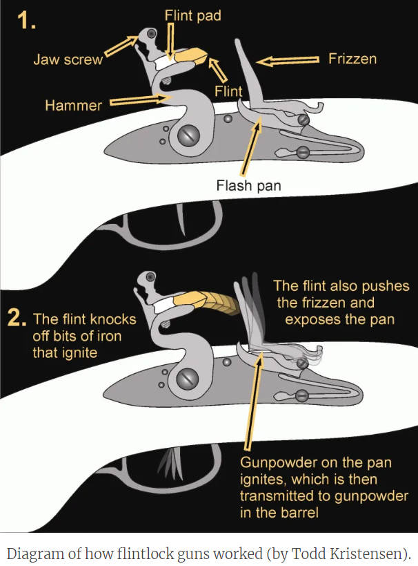
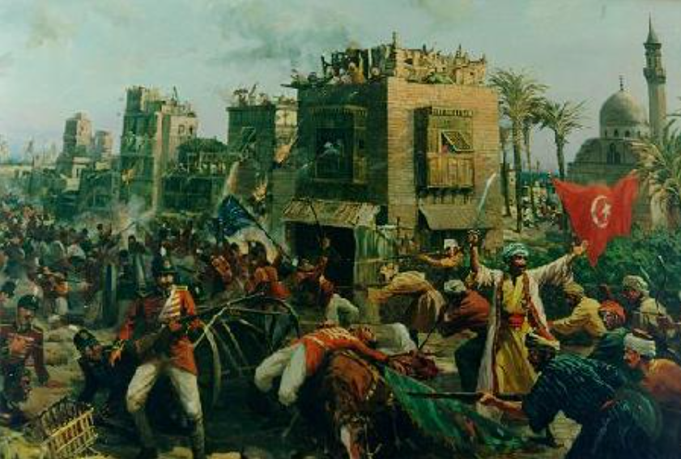
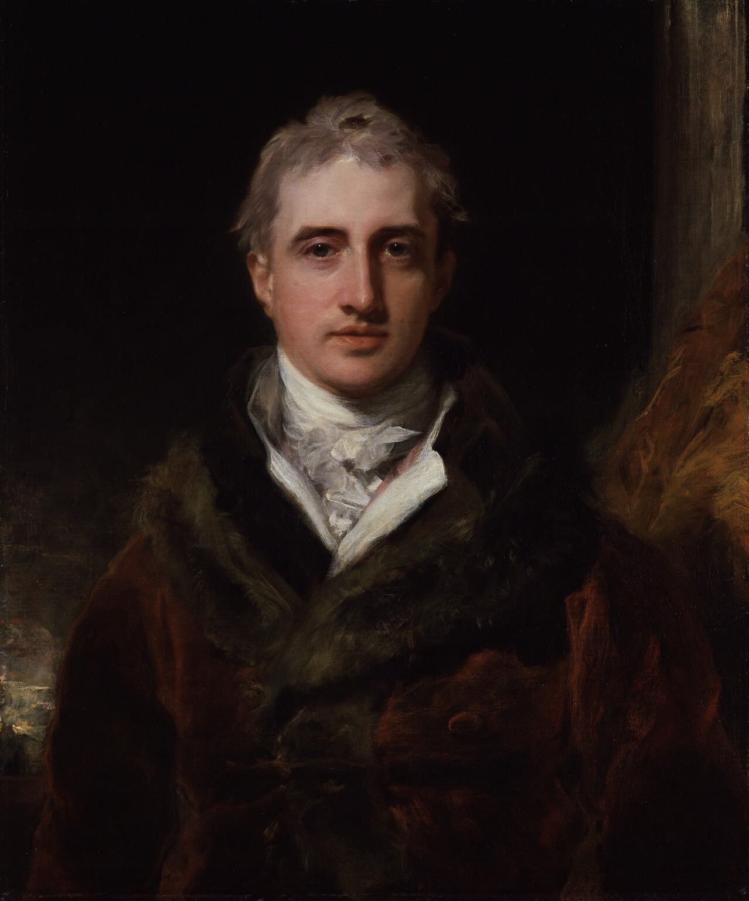

대영제국의 그림자 - 1813년 영국의 군수품 지원
게시: 2022-05-23T06:30:15+09:00
프랑스는 애초에 땅도 넓고 산업 기반이 탄탄해서 새로 30만 대군을 무장시키는 데 큰 어려움이 없었습니다만, 1807년 틸지트 조약으로 영토와 인구가 반토막 나기 이전에도 산업 기반이 그다지 인상적이지 못했던 프로이센은 10만군을 무장시키는 것도 쉽지 않았습니다. 1806년 예나-아우어슈테트 전투에 참전할 때도, 프로이센군이 가지고 있던 머스켓 소총은 프리드리히 대왕 시절에 사용되던 것을 그대로 물려 받은 것도 상당수 있었습니다. 이런 낡은 소총은 격발시 가끔씩 폭발 사고를 일으켰으므로, 당시 프로이센 군에서는 '사격 훈련시에는 화약을 정량대로 다 채우지 말고 조금 덜 넣을 것'을 지시할 정도였습니다. 이런 군수품 문제는 물론 프로이센 개혁파의 주요 관심사였고, 이들은 프리드리히 대왕의 명으로 생산된 1740년식 포츠담 머스켓(Potzdam musket)을 개선한 1809년식 포츠담 머스켓을 생산하기도 했습니다. 가령 기존 1740년식에는 없던 가늠자(rear-sight)를 V자 홈 형태로 만들어넣기도 했지요. 그러나 생산 시설은 물론 기본적인 물자 부족은 어쩔 수가 없었습니다. 가령 1809년식 모델은 당연히 놋쇠로 만들던 총열 죔쇠(barrel band)를 더 싼 일반 무쇠로 만들어야 했습니다. 이런 상황이다보니, 프로이센이 아직 러시아 측에 붙을지 프랑스 측에 붙을지 결정을 못하고 있던 1811년 말, 영국과 비밀리에 협력을 논의하던 그나이제나우는 영국에게 '프로이센은 최대 30만 병력이 동원 가능하지만 소총과 탄약은 12만 정도가 한계'라고 털어놓기도 했습니다.

(1740년식 포츠담 머스켓(Potzdam musket)입니다. 예나-아우어슈테트 전투 때도 프로이센 병사들은 이 소총을 들고 싸웠습니다. 누가 누구 것을 베꼈는지는 불분명합니다만, 신기하게도 프로이센의 포츠담 머스켓은 영국의 브라운베스(Brown Bess) 머스켓과 모든 면에서 다 동일한데, 딱 하나, 브라운베스과는 달리 총열 앞부분에 가늠쇠(fore-sight)가 달려있었습니다. 브라운베스는 가늠쇠가 없고 대신 총검 버팀쇠(bayonet lug)가 총열 위에 달려있어서, 이걸 대충 가늠쇠 대신 썼습니다. 당시 영국군이 얼마나 일반 병사들을 믿지 않았는지 보여주는 대목입니다. 그저 속사를 강조할 뿐, 애초에 병사들이 애써 조준을 할 리가 없고 조준을 해도 빗나갈 것이라고 본 것이지요. 포츠담 머스켓이나 브라운베스 머스켓이나 모두 0.75인치(19mm) 구경이었는데, 이는 프랑스의 샤를빌(Charleville) 머스켓의 0.69인치(17.5mm)보다 의도적으로 크게 만든 것입니다. 보통 군수품 생산에서 딸리는 쪽이 비상시엔 적의 탄약이라도 빼앗아 쓰려고 구경을 좀더 크게 만드는 경향이 있습니다. 그만큼 프랑스가 대단한 육군 대국이었다는 뜻이지요. 실제로 1815년 이후 프랑스군이 독일 지역에 남긴 샤를빌 머스켓 소총의 수는 75만 정에 달하여, 이후에도 오랜 기간 많은 독일 각지의 정규군에서 사용했습니다.) 이렇게 무기 부족으로 허덕이던 프로이센에게 러시아군은 큰 도움이 되지 않았습니다. 러시아도 인구와 곡물 생산력이 강점인 나라였을 뿐 공업 생산력은 그다지 뛰어난 편은 아니었습니다. 러시아의 가장 큰 무기 제조창은 모스크바에서 후퇴한 쿠투조프가 자리를 잡았던 툴라(Tula)에 있었는데, 여기서는 1808년식 모델 툴라(Tula) 머스켓을 생산하고 있었지만 이는 프랑스의 샤를빌 머스켓을 본떠 만든 복제품 정도에 불과했고, 그나마 생산량도 충분하지는 않았습니다. 그래서 미리 영국이 제공한 10만 정의 브라운베스 머스켓이 아니었다면 1812년 전쟁 자체를 치르기가 어려울 정도였습니다. 애초에 시작도 그렇게 초라했으니, 멀고 추운 본국으로부터의 보급도 원활하지 않았던 쿠투조프의 러시아 원정군이 남는 무기를 프로이센에 제공할 수도 없었습니다.

(러시아의 1808년 모델 툴라(Tula) 머스켓입니다. 옆철판(lockplate)에 1839년이라는 생산연도와 함께 툴라(Тула)라는 키릴 문자가 새겨져 있습니다. 프랑스의 샤를빌을 본떠 만든 것이니 구경은 0.69인치였을까요? 역시 군수품 생산이 부족한 나라답게, 프랑스 머스켓보다 아주 약간 큰 구경인 0.70인치로 만들었다고 합니다.) 이런 상황에서 프로이센군을 도울 국가는 영국 밖에 없었습니다. 영국은 프로이센이 프랑스에 대해 선전포고를 하자, 기다렸다는 듯이 즉각 발트 해에 호송단을 보내어 2만3천을 무장시킬 머스켓 소총 및 탄약과 함께 54문의 대포를 공급했습니다. 아울러 영국은 이미 주러시아 대사 자격으로 러시아군과 함께 움직이던 캐쓰카트(William Schaw Cathcart, 1st Earl Cathcart) 장군에 더해, 주프로이센 대사로 스튜어트(Charles William Vane, 3rd Marquess of Londonderry, 태어날 때의 이름이 Charles William Stewart) 장군을 파견했습니다. 사실 감시꾼 역할에 가까운 장군 2명과 함께 보내온 무기가 2만3천 정의 머스켓과 54문의 대포라고 하니 대영제국의 명성에 비하면 좀 초라해 보일 수 있습니다. 그러나 당시 영국도 거의 한계에 도달한 상황이었습니다. 스페인에서 싸우는 영국군과 스페인군에게 보내는 군수품을 제외하고도, 1812년 말까지 영국은 러시아와 스웨덴에게 무려 12만 정의 머스켓 소총을 보낸 바 있엇습니다. 거기에 추가로 1813년 2월에만도 러시아군에게 5만 정의 머스켓을 보냈고요. 흔히 영국이 오스트리아와 러시아에게 기니(guinea) 금화만 뿌렸다고 생각하지만 실은 막대한 군수품을 대륙에 쏟아붓고 있었습니다. 뒤의 이야기지만 영국의 군수품 지원은 당연히 여기에 그치지 않았고, 1813년 여름까지 프로이센군과 러시아군에게 각각 10만 정씩의 머스켓 소총을 제공했을 뿐만 아니라 총 116문의 대포와 1200톤의 탄약도 공급했습니다. 거기에 추가로 스웨덴에게도 1813년 여름에 4만 정의 머스켓 소총을 보냈습니다. 그해 11월 영국 외무부 장관인 케슬레이(Castlereagh) 자작이 보고한 바에 따르면 영국이 이베리아 반도와 중부 유럽에 쏟아부은 머스켓 소총은 거의 1백만 정에 달했습니다. 1813년 한 해 동안 영국이 프로이센과 러시아, 스웨덴 3개국에 제공한 물품은 아래와 같이 주요 무기와 탄약은 물론 담요와 군복, 심지어 군악대용 악기와 속옷류까지 온갖 것을 망라하고 있습니다. 필요 장비를 완벽히 갖춘 대포 : 218문 + 적절한 탄약 머스켓 소총 : 124,119정 머스켓 탄약포 : 18,231,000개 화약과 부싯돌 : 23,000통 검, 기병도, 기병창 : 34,443자루 북, 트럼펫, 나팔, 군기자루 : 624점 방한 외투와 망토 등을 완전히 세트를 갖춘 군복 : 150,000벌 다양한 색상의 직물 : 187,000 야드 군화와 장화 : 175,796점 + 적절한 분량의 수선용 가죽 담요 : 114,000장 린넨 셔츠와 바지 : 58,800벌 각반 : 87,190켤레 양말과 스타킹 : 69,624켤레 탄띠 등 각종 장구류 : 90,000점 배낭 : 63,457개 깔개를 갖춘 안장 : 14,820개 작업모 : 22,000개 머리빗, 구두솔, 구두 닦는 천 : 140,600개 장갑 : 3,000점 플란넬 셔츠와 가운, 모자, 바지 : 5,000 잡낭과 수통 : 14,000개 비스킷과 밀가루 : 702,000 파운드 쇠고기와 돼지고기 : 691,360 파운드 브랜디와 럼 : 28,625 갤론 기타 텐트와 손수레 등 온갖 캠핑 장비와 의료 도구, 의약품 등등

(영국이 공급한 주요 군사 물자 중에 부싯돌이 포함된 것은 다소 엉뚱해보이지만 매우 당연한 것이었습니다. 당시 머스켓 소총의 격발은 부싯돌로 이루어졌는데, 19세기 초에도 부싯돌은 아무데서나 쉽게 구할 수 있는 것이 아니었습니다. 당시 유럽에서 가장 양질의 부싯돌은 프랑스 한가운데 위치한 묑(Meusnes)에서 많이 났고, 이 지방 주요 수출물이 부싯돌이었습니다. 또 부싯돌 깎는 기술도 핵심 군사 기술이었고, 프랑스 육군 포병대에만도 이런 부싯돌공이 168명이나 있었습니다. 당연히 부싯돌은 중요한 군사 자원으로서, 프랑스군만 해도 머스켓 소총 장전 연습을 할 경우 이 부싯돌은 빼두고 나무토막을 끼워놓고 연습을 했습니다.) 당시 영국의 위상은 오늘날 미국의 존재감에는 크게 미치지 못했습니다. 영국이 당시 어느 누구보다 먼저 산업혁명을 시작하여 유럽 최대의 공업국이자 넓은 식민지를 세계 곳곳에 갖고 있었던 것도 맞았지만, 아직 영국은 대영제국이라고 부를 만한 빅토리아 여왕 시대의 국력은 갖추지 못한 상태였습니다. 가령 인도의 일부만 간신히 식민지로 점령하고 있었을 뿐 드넓은 인도 아대륙 전체에 대해 감히 무력침공할 엄두를 내지 못하고 있었습니다. 이집트에서도 당시 실권자이던 알리 태수(Muhammad Ali Bey)를 상대로 벌어진 1807년 로제타(Rosetta, Rashid) 전투에서 900명의 사망자 및 700명의 포로를 내는 참패를 겪으며 완전히 축출되어 버립니다. 북아메리카의 식민지도 반란을 일으켜 미국이라는 신생국으로 독립했을 뿐만 아니라 1812년에는 본국인 영국과 전쟁에 돌입하기까지 했습니다. 당시 영국이 산업혁명에도 불구하고 이렇게 별 위력을 발휘하지 못하고 있던 것은 무엇보다도 아직 기술적 격차를 만들지 못했기 때문이었습니다. 기술적 격차가 없는 전쟁에서는 어느 쪽이 더 많은 총검을 동원하느냐가 전쟁의 승패를 갈랐는데, 영국은 유럽 대륙의 강국들에 비해 확실히 인구가 딸렸습니다.

(1807년 영국에게 크나큰 치욕을 안겨준 로제타(Rosetta) 전투입니다. 이 전투에서는 로제타 수비대가 저항 없이 도망쳤다고 생각하고 방심한 영국군이 무방비 상태로 당했습니다만, 이어지는 알 하마드(Al Hammad) 전투에서는 우월한 이집트의 마멜룩 기병대에게 영국 보병들이 완전히 농락당하고 말았습니다.) 그렇게 인구가 부족했던 영국은 섬나라 특성상 강력한 해군력에 국방을 의존했지만, 결국 유럽 대륙에서 강자가 나타나는 것을 경계하지 않을 수 없었습니다. 그래서 영국은 언제나 유럽 대륙이 분열되어 서로 죽고 죽이며 균형을 이루기를 바랬습니다. 이렇게 한줄 요약하면 영국이 굉장한 악당처럼 보입니다. 실제로 나폴레옹은 자신의 가장 큰 적은 러시아가 아니라 영국이며 유럽이 겪어온 온갖 불행의 원인이 영국의 협잡 때문이라고 생각했습니다. 그러나 영국이 그저 유혈이 낭자한 전쟁을 사랑했기 때문에 유럽 대륙에서 전쟁이 일어나기를 기대했던 것은 아니었습니다. 영국은 그저 자신의 안보와 경제 번영을 위협할 강자가 나타나는 것을 경계했을 뿐이었습니다. 위에서 보셨듯이, 영국도 유럽 대륙의 나폴레옹 전쟁에 큰 지출을 해야 했고, 저런 막대한 전쟁 비용 지출은 당시 영국에게는 물론, 현대의 미국에게도 큰 부담이 되는 것이었습니다. 영국도 이미 휘청거리고 있었고, 언제까지고 이런 지출을 계속할 수는 없었습니다. 특히, 이번에 나폴레옹이 유럽 대륙을 제패하는 것을 막아낸다고 해도 나중에 프랑스가 재기하여 다시 유럽 제패를 노리거나 반대로 러시아, 혹은 프로이센이 지나치게 큰 강국이 되어 제2의 나폴레옹이 되기라도 한다면 그때 가서 다시 또 엄청난 거금을 써야 했는데, 그건 영국에게도 감당이 안 되는 일이었습니다. 인간은 어리석고 같은 실수를 반복한다고 합니다. 그래서 전쟁이라는 정말 바보 같은 짓거리를 지치지도 않고 되풀이하는 것이고요. 이런 바보짓에 종지부를 찍으려는 노력이 전혀 없었을까요? 있었습니다. 아우스테를리츠 전투가 벌어지기 전의 일입니다만, 1805년 영국의 수상 피트(William Pitt the Younger)가 러시아의 짜르 알렉산드르에게 전달할 목적으로 쓴 메모가 있었습니다. 그 내용이 뭐 딱히 대단한 것은 아니었고, 그저 나폴레옹을 막아내려면 다수의 유럽 국가가 거대한 연합을 이루어야 한다는 전형적인 영국의 유럽 균형론이었습니다. 그러나 이 피트의 메모가 진정한 의미를 가지게 된 것은 그의 후계자라고 할 수 있는 캐슬레이(Robert Stewart, Viscount Castlereagh) 자작이 1812년 영국의 외무부 장관이 되면서부터였습니다.

(1812년부터 영국 외무부 장관이 된 캐슬레이 자작입니다. 그는 나폴레옹과 동갑으로서, 더블린에서 태어났습니다만 진짜 아일랜드인이라기보다는 아일랜드로 이주한 잉글랜드 가문 출신이라고 하는 것이 맞겠습니다. 그는 아일랜드 왕국이 대영제국과 통합되어 연합 왕국이 되는 것에 그의 멘토인 피트와 함께 열성을 다했습니다만, 약속되었던 카톨릭 해방령(Catholic emancipation)이 제대로 이루어지지 않아 온갖 욕을 다 먹고 사임하거나, 정적인 캐닝(George Canning)과 네덜란드 볼헤렌(Walcheren) 원정의 실패를 두고 결투를 벌인 뒤 또 사임하는 역경도 많이 겪었습니다. '명예로운 고립'을 외치는 영국의 불간섭주의는 사실 바로 이 캐슬레이가 1820년 문서로 만들고 확립한 것인데, 이는 유럽 대륙에서 벌어지는 일에 대해 나몰라라 정책이라기보다는 베르사이유 체제의 견고함에 근거를 둔 것입니다. 그는 많은 업적을 쌓았음에도 국내에서는 정치적으로 인기가 최악이었고, 그런 사정과 과로가 겹체 53세에 자살로 불행한 삶을 마감했습니다.) 그는 당장 나폴레옹을 좌절시키는 것도 물론 중요하고, 그러기 위해서는 그의 멘토인 피트 수상의 계획대로 러시아와 프로이센은 물론 스웨덴과 오스트리아, 더 나아가 라인 연방의 독일 국가들도 끌어들이는 것이 중요하다고 보았습니다. 거기까지는 모든 사람들이 다 동의하는 바였고 매우 평범한 생각이었습니다. 그러나 장기적인 유럽의 평화를 위해서는 어떤 그림이 필요한지에 대해서는 깜짝 놀랄 정도로 아무도 별 생각이 없었습니다. 1813년 초까지만 해도, 알렉산드르 본인조차도 나폴레옹을 퇴위시켜서 프랑스로부터 완전히 제거한다는 생각을 전혀 하고 있지 않을 정도였습니다. 그러나 캐슬레이는 좀더 장기적인 큰 그림을 그려야 한다고 생각했는데, 그런 아이디어를 찾기 위해 멘토인 피트의 예전 저술을 뒤적이다가 1805년에 알렉산드르를 위해 썼던 메모를 읽게 되었고, 거기서 아래 문장에 특히 주목했습니다. "유럽의 평화를 가능한 한 온전히 유지하기 위해서는 전반적익 평화가 이루어진 시기에 유럽의 주요 강국들이 모두 회원으로 참여하는 조약을 만드는 것이 필요할 것으로 보입니다. 그 조약의 회원국들은 그 평화를 위협하는 어떤 시도에 대해서도 서로를 보호하고 지원하도록 구속력을 가져야 합니다. 그 조약은 유럽의 공통법으로서 일반적이고 포괄적인 체계를 확립해야 하고, 그 일반적인 평온을 어지럽히는 미래의 어떠한 시도도 억압할 수단을 최대한 제공해야 합니다. 무엇보다, 프랑스 대혁명이라는 대재앙 이후 유럽이 겪은 모든 환란을 일으켰던 것과 같은 확장 정책과 야망을 억압할 수 있어야 합니다." 크게 보면 오늘날의 NATO에 해당하는 국제 조약의 밑그림이라고 할 수 있었습니다. 이것이 소위 '피트 계획' (Pitt Plan)의 핵심이었고, 영국 입장에서 설명하자면 언제까지나 전쟁에 개입해서 돈을 펑펑 쓰며 균형을 맞출 것이 아니라, 주요 강대국들이 아예 처음부터 균형을 이루도록 항구적인 체제를 만들자는 것이었습니다. 이 큰 그림은 1813년 초 당시엔 아직 구체화되지는 않았지만 향후 베르이사이유 체제로 발전되어 나가게 됩니다. 이렇게 보면 뭔가 굉장한 혜안이라고 볼 수도 있습니다만, 나쁘게 말하면 유럽의 지배층들이 기존 질서, 즉 앙시앵 레짐(ancien regime)을 유지하고 그를 뒤흔들 수 있는 '불온한 움직임'을 여러 정부가 합심하여 진압하자는 매우 반동적인 담합이라고 볼 수도 있습니다. 이런 체제는 유럽 대혁명의 한 해였던 1848년 여러 국가에서 일어난 혁명을 진압하는 원동력이 되었습니다만, 당장의 대상은 나폴레옹이라는 개인으로 구현화된 프랑스 대혁명, 즉 신분제 타파 움직임이었습니다. 이렇게 영국이 본격적으로 뛰어들면서 제6차 대불동맹전쟁(War of the Sixth Coalition)이 시작됩니다. 위에서 언급한 주 프로이센 영국 대사 스튜어트 장군은 4월에 당시 드레스덴(Dresden)에 위치했던 연합군 사령부에 도착하여 역시 거기 있던 주 러시아 영국 대사 캐쓰카트와 합류했습니다. 잠깐, 드레스덴이라고요? 드레스덴은 나폴레옹의 충직한 동맹국인 작센 왕국의 수도입니다. 대체 거기에 왜 러시아군과 프로이센군 사령부가 들어선 것일까요? Source : The Life of Napoleon Bonaparte, by William Milligan Sloane Napoleon and the Struggle for Germany, by Leggiere, Michael V
Choose Your Weapons: The British Foreign Secretary by Douglas Hurd
https://en.wikipedia.org/wiki/Robert_Stewart,_Viscount_Castlereagh https://albertashistoricplaces.com/2019/07/10/flash-in-the-pan-the-archaeology-of-gunflints-in-alberta/ https://www.reddit.com/r/AskHistorians/comments/4awwnk/what_type_of_infantry_weapons_did_the_russians/ https://en.wikipedia.org/wiki/Potzdam_Musket https://collections.royalarmouries.org/object/rac-object-29075.html https://www.liveauctioneers.com/en-gb/item/9904807_musket-russian-m1808-tyna-tula-1839-the-russi https://en.wikipedia.org/wiki/Alexandria_expedition_of_1807